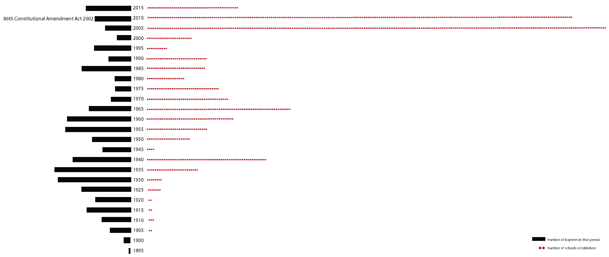

Understanding the influences of Christianity in the villages of Katkahi parish
The tribals of Jharkhand have been influenced by a lot of factors in terms of culture, social and political nature. One of those factors was the adoption Christianity that began around a hundred years ago and is speculated to have affected the community both positively and negatively.
Christianity started around a hundred years ago in the Chota-Nagpur plateau region of which the parish of Katkahi is a part of and comes under the district of Gumla, Jharkhand. The area is occupied by the tribal population and Gumla is reported to have the highest proportion of Schedule Tribes (68.4%) in the State. Over the years, several factors have influenced the tribal community culturally, socially and politically. Christianity has been one of those factors and is said to have brought education and development in tribal societies. The missionaries were also known to help the tribals with the legal help required during the period of exploitation after the land acquisition act of 1894. On the other side, adoption of a new religion has also lead to discrimination against the tribal population. Cases of social mobilization and legal cases whereby attempts have been made to deschedule Christian tribes from scheduled tribe status have come up.
Looking through the lens of data allows us to review the influence of Christianity in the region. The trends in adoption of Christianity in different villages and combining it with other relevant data, particularly the availability of amenities such as education and medical facilities, can through light upon the speculations put forth when it comes to positive or negative influences of Christianity in the tribal areas of Jharkhand.
THE PARISH OF KATKAHI
Katkahi is a parish under the Roman Catholic Archdioces of Ranchi accommodating around 57 villages (but only 27 villages were identified in the census 2011). The parish church is about 135Kms from the capital, Ranchi. The church was fully built in 1895 but the first record of baptism can be found as early as 1872. The church maintains the baptism, communion, confirmation and marriage records of the parishioners in physical registers which are hand written. The records holds the name, date of the sacrament and are written in ancestral order.
BAPTISMS IN VILLAGES
Over a course of approximately 100 years, about 24362 people were baptized in the parish of Katakhi. Two specific time periods can be seen wherein the number of baptism increases. One happens approximately between 19251930 and the second happens between 1950-1955. The first peak happens for the villages which have comparitively larger population and the the second peak occurs for the smaller population. It was the smaller villages wherein the initial conversions took place
MISSIONARY ACTIVITIES
Missionaries were active over the years not only through evangelical work but also provided temporal advantages to the converts. During the period after the Land acquisition act of 1894, the tribals were undergoing misery and exploitation due to the unlimited demands for begari (wage-less labor) by landlords. It was observed that the cases that were brought to the court by a Christian Uraon, helped and sometimes even financed by the missionaries, were more successful than those brought by pagans. It could be seen that a lot of activities preceded the peaks for about 20 years.
AVAILABILITY OF AMENITIES : SCHOOLS
According to some studies, Christianity has also brought education and development in tribal societies of Jharkhand. The census records a total of 123 schools in 27 villages. Though it seems like the number of schools are proportional to the population of the villages, it is interesting to note that the village with the most number of baptisms i.e. Chichchwani does not have a single school according to the census data of 2011.

The peaks for number of baptism over the years and the establishment year of schools in the district of Gumla seem to coincide. The most number of schools, though, was during the time when the 86 constitutional amendment act was implemented. The website Jharkhand Academic Council lists only 33 schools. Hence, the schools were discoverd from a public platform i.e. neighbourhoodinfo.com. If the data from the public platform is to be trusted, it raises questions as to why information about these schools are not available on the government website?
AVAILABILITY OF AMENITIES : MEDICAL FACILITIES
One would expect the number of medical facilities to be proportional to the total population, but it isn’t so and neither is it proportional to the number of baptisms in the villages. Infact, the village with the most number of medical facilities falls on the middle of the scale both for population and also number of baptisms. Katkahi, which is the village where the church is situated, has the most number of medical facility available.